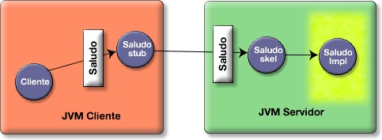
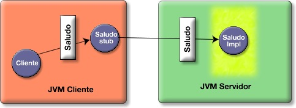
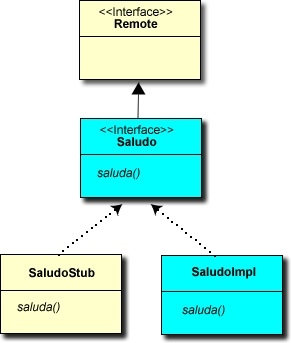
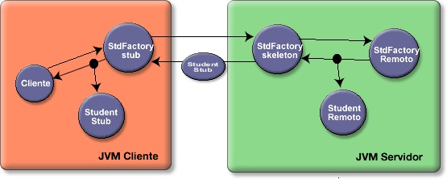

La implementación EJB en detalle
Implementación de un componente EJB: beans de sesión sin estado
Antes de profundizar más sobre la arquitectura de un componente EJB, vamos a estudiar las clases Java que se usan para implementarlo. En concreto, vamos a ver en detalle la implementación del EJB desplegado en la sesión anterior de ejercicios. Recordemos que se trataba de un sencillo EJB cuya interfaz daba acceso a dos métodos de negocio:
String saluda(); SaludoTO getSaludo(int numDatos);
El primer método devuelve una cadena con un saludo que cambia aleatoriamente y el segundo devuelve un SaludoTO (transfer object) que contiene la cadena de saludo y un array de enteros con un tamaño definido por el número de datos que pasamos como parámetro. El bean se despliega en el servidor de aplicaciones con el nombre SaludoBean.
¿Qué clases Java se usan para implementar el bean? Desde el punto de vista del cliente que usa el componente, un componente EJB se define siempre a partir de dos interfaces: la interfaz home y la interfaz componente. La interfaz componente define los métodos de negocio del bean (el método saluda() en el ejemplo). La interfaz home proporciona los métodos necesarios para acceder a los beans (crearlos, buscarlos, etc.). Podemos ver la interfaz home como una factoría que proporciona métodos que nos permiten acceder a las instancias del bean.
En este caso, los nombres y los métodos de las interfaces son los siguientes:
- Interfaz SaludoHome.java: define el método create() que devuelve un objeto de tipo Saludo.
- Interfaz Saludo.java: define los métodos saluda() y getSaludo(int numDatos).
Esto es todo desde el punto de vista del cliente. Sin embargo, desde el punto de vista del desarrollador, es necesario una clase más, en la que se define la implementación del bean. Se trata de la clase SaludoBean.java.
Ademas de las clases e interfaces Java, es necesario otro elemento adicional. Se trata de los descriptores de despliegue. Son ficheros XML que describen un conjunto de características declarativas del bean relacionadas con su despliegue en el servidor de aplicaciones. Existen dos grupos de descriptores de despliegue, los estándar (en los que se definen características de los beans definidas por la especificación EJB) y los propios del servidor de aplicaciones (en los que se definen características de propias del servidor de aplicaciones en el que estamos desplegando el bean). En el caso del ejemplo que estamos presentando en esta sesión, son los ficheros ejb-jar.xml y weblogic-ejb-jar.xml.
| Elemento del bean SaludoBean | Descripción |
|---|---|
| Interfaz SaludoHome.java | Define el método create() que devuelve un objeto que implementa la interfaz Saludo. |
| Interfaz Saludo.java | Define los métodos de negocio saluda() y getSaludo(int numDatos). |
| Clase SaludoBean.java | Define la implementación de los métodos saluda() y getSaludo(int numDatos). |
| Ficheros ejb-jar.xml y weblogic-ejb-jar.xml | Descriptores de despliegue del bean. |
Todas estas clases Java y ficheros XML deben desplegarse en el servidor de aplicaciones. El proceso de despliegue de los beans no está estandarizado y cada servidor de aplicaciones define unos métodos distintos. En general, hay tres formas de hacerlo:
- Construir un fichero EAR (una especie de JAR) con todos los elementos y desplegar este fichero.
- Indicarle al servidor de aplicaciones el directorio donde se encuentra compilado el bean (en el caso en que el desarrollo y el despliegue se haga en la misma máquina).
- Ejecutar una tarea ant que automatiza el despliegue.
Vamos a centrarnos en el desarrollo de los beans de sesión. El desarrollo y programación de los beans suele ser un proceso bastante similar sea cual sea el tipo de bean. Consta de los siguientes 5 pasos:
- Escribe y compila las dos interfaces del bean: home y componente.
- Escribe y compila la clase bean que contiene a todos los métodos de negocio.
- Crea un descriptor XML del despliegue en el que se describa qué es el bean y cómo debe manejarse. Este fichero debe llamarse ejb-jar.xml.
- Pon la clase bean, los interfaces y el descriptor XML del despliegue en un fichero EJB JAR . Podría haber más de un bean el mismo fichero EJB JAR, pero nunca habrá más de un descriptor de despliegue.
- Despliega el bean en el servidor usando las herramientas proporcionadas por el servidor de aplicaciones.
Vamos a ver con algo más de detalle estos cinco pasos, usando el sencillo ejemplo SaludaBean.
Interfaces componente y home
En primer lugar vamos a implementar las interfaces que especifican las funciones que ofrece el bean. Como hemos visto en el apartado anterior, debemos definir el método create en la interfaz home y los métodos de negocio en la interfaz componente. Vamos a llamar a estas interfaces SaludoHome y Saludo. Estas interfaces son las que deberá usar el cliente para comunicarse con el bean.
La interfaz Saludo hereda de la interfaz EJBObject y en ella se definen los métodos de negocio del bean, los que va a poder llamar el cliente para pedir al bean que realice sus funciones. A su vez, la interfaz EJBObject extiende la interfaz RMI Remote, por lo que estamos definiendo una interfaz remota.
Saludo.java:
package es.ua.jtech.ejb.beans;
import javax.ejb.EJBObject;
import java.rmi.RemoteException;
public interface Saludo extends EJBObject {
public String saluda() throws RemoteException;
public SaludoTO getSaludo(int numDatos) throws RemoteException;
}
Todos los métodos definidos en esta interfaz se corresponden con los métodos de negocio del bean y todos van a ser métodos remotos, ya que van a implementarse en una máquina virtual Java distinta de la máquina. Por ello, todos estos métodos deben declarar la excepción RemoteException.
La interfaz home hereda de la interfaz EJBHome. El cliente usa los métodos de esta interfaz para obtener una referencia a la interfaz componente. Puedes pensar en el home como en una especie de fábrica que construye referencias a los beans y las distribuye entre los clientes.
SaludoHome.java:
package es.ua.jtech.ejb.beans;
import javax.ejb.EJBHome;
import java.rmi.RemoteException;
import javax.ejb.CreateException;
public interface SaludoHome extends EJBHome {
public Saludo create() throws RemoteException, CreateException;
}
El método create() se corresponde con el método ejbCreate() definido en la clase SaludoBean, y debe devolver el tipo Saludo de la interfaz componente. La interfaz también va a ser una interfaz remota y, por tanto, debe declarar la excepción RemoteException. Además, el método create debe declarar la excepción CreateException.
Cuando se despliega un bean en el contenedor EJB, éste crea dos objetos que llamaremos EJBObject y EJBHome que implementarán estas interfaces. Estos objetos separan el bean del cliente, de forma que el cliente nunca accede directamente al bean. Así el contenedor puede incorporar sus servicios a los métodos de negocio.
¿Dónde se deberán instalar los ficheros .class resultantes de las compilaciones de estas interfaces: en el servidor, en el cliente o en ambos?
¿Qué sucede si definimos algún método en la clase bean que después no lo definimos en la interfaz componente?
Clase bean
En la clase bean se encuentran los denominados métodos de negocio. Son los métodos finales a los que el cliente quiere acceder y los que debes programar. Son también los métodos definidos en la interfaz componente.
Lo primero que debes hacer es decidir qué tipo de bean necesitas implementar: un bean de sesión, de entidad o uno dirigido por mensajes. Estos tres tipos se definen con tres interfaces distintas: SessionBean, EntityBean y MessageBean. La clase bean que vas a escribir debe implementar una de ellas. En nuestro caso, vamos a definir un bean de sesión sin estado, por lo que la clase SaludoBean implementará la interfaz SessionBean.
SaludoBean.java:
package es.ua.jtech.ejb.beans;
import java.util.ArrayList;
import java.util.Date;
import javax.ejb.EJBException;
import javax.ejb.SessionBean;
import javax.ejb.SessionContext;
public class SaludoBean implements SessionBean {
private static final long serialVersionUID = 1L;
private String[] saludos = { "Hola, que tal?", "Cuanto tiempo sin verte",
"Que te cuentas?", "Me alegro de volver a verte" };
// Métodos de negocio
public String saluda() {
int random = (int) (Math.random() * saludos.length);
return saludos[random];
}
public SaludoTO getSaludo(int numDatos) {
int random = (int) (Math.random() * saludos.length);
String saludo = saludos[random];
Date fecha = new Date();
ArrayList<Integer> datos = new ArrayList<Integer>();
for (int i=0;i<numDatos;i++){
datos.add(i);
}
SaludoTO miSaludo = new SaludoTO(saludo,fecha,datos);
return miSaludo;
}
// Métodos de callback de la interfaz SessionBean
public void setSessionContext(SessionContext arg0) throws EJBException {
System.out.println("Estoy en setSessionContext()");
}
public void ejbCreate() throws EJBException {
System.out.println("Estoy en ejbCreate()");
}
public void ejbRemove() throws EJBException {
System.out.println("Estoy en ejbRemove()");
}
public void ejbActivate() throws EJBException {
System.out.println("Estoy en ejbActivate()");
}
public void ejbPassivate() throws EJBException {
System.out.println("Estoy en ejbPassivate()");
}
}
Interfaces locales
Hasta ahora hemos considerado siempre que el cliente y el bean se encuentran en distintas máquinas virtuales. Por eso es necesario RMI para conectar el cliente y el bean. Pero ¿por qué introducir RMI cuando el cliente y el bean se encuentran en la misma JVM? La introducción de RMI en la arquitectura la dota de flexibilidad, pero también le añade penalización en el rendimiento, debido sobre todo a la necesidad de serializar todos los argumentos y llamadas. Esta penalización no está justificada cuando el objeto cliente del bean es, por ejemplo, un servlet o una página JSP que reside en la misma JVM que el bean. Tampoco está justificado el uso de RMI cuando se están comunicando dos beans que residen en la misma JVM.
La especificación 2.0 de EJB propone el uso de las interfaces locales EJBLocalHome y EJBLocalObject como una solución a estas situaciones. A la hora de programar el bean lo único que cambia es que las interfaces home y componente deben heredar de EJBLocalHome y EJBLocalObject. Estas interfaces ya no son remotas, por lo que los métodos no van a tener que declarar la excepción RemoteException. En el nombre de las interfaces suelen añadirse la palabra local, para indicar que se tratan de objetos que van a llamarse sin usar RMI. En el caso del bean Saludo, llamaríamos SaludoLocal a la interfaz componente y SaludoLocalHome a la interfaz home.
SaludoLocal.java:
package es.ua.jtech.ejb.beans;
import javax.ejb.EJBLocalObject;
public interface SaludoLocal extends EJBLocalObject {
public String saluda();
public SaludoTO getSaludo(int numDatos);
}
SaludoLocalHome.java:
package es.ua.jtech.ejb.beans;
import javax.ejb.CreateException;
import javax.ejb.EJBLocalHome;
public interface SaludoLocalHome extends EJBLocalHome {
public SaludoLocal create() throws CreateException;
}
Descriptores del despliegue
Los tres ficheros Java anteriores son todo lo que tienes que escribir en Java. Recuerda: una clase (SaludoBean) y dos interfaces (SaludoHome y Saludo). Ya queda poco para terminar. El cuarto y último elemento es tan importante como los anteriores. Se trata de los descriptores de despliegue ( deployment descriptors, DD) del bean. Los descriptores de despliegue son ficheros XML en los que se detalla todo lo que el servidor de aplicaciones necesita saber para gestionar el bean.
En el fichero ejb-jar.xml se describen las propiedades estándar del bean. Este fichero es el mismo para todos los servidores de aplicaciones. El fichero otro fichero, weblogic-ejb-jar.xml, define las características del bean propias del servidor de aplicaciones que estamos usando.
A continuación mostramos ambos ficheros, explicando las características definidas en cada uno de ellos. Es posible definir muchas características más, relacionadas con la seguridad, la transaccionalidad y otros aspectos. Las iremos viendo poco a poco. Los elementos definidos representan lo mínimo para que el bean funcione.
Fichero ejb-jar.xml:
- Tipo del bean: session. Bean de sesión.
- Nombre lógico del bean: SaludoBean. Es el nombre usado para referirse al bean en los descriptores de despliegue. No es lo mismo que el nombre JNDI, que es el que se utiliza en los clientes para localizar el bean y que se define en el fichero weblogic-ejb-jar.xml. Normalmente se usa el mismo nombre lógico que nombre JNDI.
- Interfaz home: sesion1.beans.SaludoHome
- Interfaz componente: sesion1.beans.Saludo
- Clase implementación: sesion1.beans.SaludoBean
- Tipo de sesión: Stateless (sin estado)
- Tipo de gestión de las transacciones: Container (gestionadas por el contenedor EJB)
Listado:
<?xml version="1.0" encoding="UTF-8"?>
<ejb-jar id="ejb-jar_ID" version="2.1"
xmlns="http://java.sun.com/xml/ns/j2ee"
xmlns:xsi="http://www.w3.org/2001/XMLSchema-instance"
xsi:schemaLocation="http://java.sun.com/xml/ns/j2ee
http://java.sun.com/xml/ns/j2ee/ejb-jar_2_1.xsd">
<enterprise-beans>
<session>
<ejb-name>SaludoBean</ejb-name>
<home>es.ua.jtech.ejb.beans.SaludoHome</home>
<remote>es.ua.jtech.ejb.beans.Saludo</remote>
<local-home>es.ua.jtech.ejb.beans.SaludoLocalHome</local-home>
<local>es.ua.jtech.ejb.beans.SaludoLocal</local>
<ejb-class>es.ua.jtech.ejb.beans.SaludoBean</ejb-class>
<session-type>Stateless</session-type>
<transaction-type>Container</transaction-type>
</session>
</enterprise-beans>
</ejb-jar>
Fichero weblogic-ejb-jar.xml:
- Nombre JNDI del bean SaludoBean: SaludoBean
Listado:
<?xml version="1.0" encoding="UTF-8"?>
<weblogic-ejb-jar xmlns="http://www.bea.com/ns/weblogic/90"
xmlns:xsi="http://www.w3.org/2001/XMLSchema-instance"
xsi:schemaLocation="http://www.bea.com/ns/weblogic/90
http://www.bea.com/ns/weblogic/90/weblogic-ejb-jar.xsd">
<weblogic-enterprise-bean>
<ejb-name>SaludoBean</ejb-name>
<jndi-name>SaludoBean</jndi-name>
<local-jndi-name>SaludoBeanLocal</local-jndi-name>
</weblogic-enterprise-bean>
</weblogic-ejb-jar>
Fichero ejb-jar
Una vez escritas las clases e interfaces y el descriptor del despliegue, debemos compactar todos los ficheros resultantes (los ficheros .class y el fichero XML) en un único fichero JAR.
La estructura de este fichero JAR es:
/sesion1/beans/SaludoBean.class /sesion1/beans/Saludo.class /sesion1/beans/SaludoHome.class /META-INF/ejb-jar.xml /META-INF/weblogic-ejb-jar.xml
En el directorio META-INF se incluyen los descriptores de despliegue. El resto del fichero JAR corresponde a los tres ficheros .classque definen el bean. En el caso de utilizar clases auxiliares o definir otros beans, irían también en este fichero.
Este fichero es el que se desplegará en el servidor de aplicaciones. Puedes nombrar a este fichero con el nombre que quieras. Una costumbre bastante usada es llamarlo NOMBRE-ejb.jar, siendo NOMBRE el nombre del bean o de la aplicación. En nuestro caso, podríamos llamarlo saludo-ejb.jar.
Despliegue del bean
Una vez construido el fichero EJB JAR es necesario desplegarlo en el servidor de aplicaciones.
Existen dos escenarios diferenciados para la realización del despliegue, dependiendo de si has desarrollado el bean en el mismo host que se encuentra el servidor de aplicaciones o en un host distinto. El primer caso suele suceder cuando estás trabajando en modo de prueba y estás depurando el desarrollo. El segundo caso suele suceder cuando ya has depurado el bean y quieres desplegarlo en modo de producción: ¡es recomendable no desarrollar y depurar en el mismo host en el que se encuentra el servidor de aplicaciones en producción!.
El proceso de despliegue no está definido en la especificación J2EE y cada servidor de aplicaciones tiene unas características propias. En general, la mayoría de servidores de aplicaciones proporcionan un interfaz gráfico de administración para gestionar el despliegue. También la mayoría de servidores proporcionan una tarea de ant para poder realizar el despliegue usando esta herramienta desde la línea de comando. En el la sesión práctica veremos un ejemplo con el servidor de aplicaciones weblogic de BEA.
Repaso de RMI
Stubs, skeletons y paso de argumentos
En este apartado vamos a repasar algunos conceptos fundamentales para entender el funcionamiento de la arquitectura EJB: los stubs y skeletons, los objetos remotos y el paso de parámetros y devolución de resultados en las llamads remotas.
RMI (Remote Method Invocation) define la forma de comunicación remota entre objetos Java situados en máquinas virtuales distintas. Supongamos que un objeto cliente quiere hacer una petición a un objeto remoto situado en otra JVM (Máquina Virtual Java, Java Virtual Machine). RMI pretende hacer trasparente la presencia de la red, de forma que cuando escribas el código de los objetos clientes y remotos no tengas que tratar con la complicación de gestionar la comunicación física por la red.
Para ello, RMI proporciona al cliente un objeto proxy (llamado stub) que recibe la petición del objeto cliente y la transforma en algo que se puede enviar por la red hasta el objeto remoto. Este stub se hace cargo de todos los aspectos de bajo nivel (streams y sockets). En el lado del servidor, un objeto similar (llamado skeleton) recibe la comunicación, la desempaqueta y lanza el método correspondiente del objeto remoto al que sirve. Al igual que la petición, se deben empaquetar los argumentos de la llamada. El programador sólo debe definir el código del método en el objeto remoto. Los objetos stub y skeleton los construye el compilador de RMI de forma automática.
La siguiente figura muestra un ejemplo con el objeto remoto SaludoImpl:

El objeto remoto SaludoImpl está sombreado para indicar que en él se encuentra la implementación de los métodos remotos.
Una vez realizada la llamada, el stub queda en espera (y el objeto cliente que ha llamado al método correspondiente del stub) hasta recibir la respuesta del skeleton (respuesta que debe proprocionar el método invocado en el objeto remoto). Si la respuesta no se recibe, el stub lanza una excepción que debe capturar el objeto cliente.
Es posible que en el servidor no exista un objeto skeleton por cada objeto remoto sino que, para hacer la arquitectura más eficiente, se pueda definir un objeto genérico que distribuya las peticiones a los objetos remotos con algún mecanismo de identificación de la petición y de caché de objetos remotos. Por eso en las siguientes imágenes que mostremos no aparecerá este objeto.

Concretando más, para implementar y usar una clase remota con RMI debemos cumplir las siguientes condiciones
- Se deben definir la clase remota como una interfaz que hereda de la interfaz java.rmi.Remote.
- Todos los métodos de esa interfaz deben declarar la excepción RemoteException.
- Se debe definir una clase que implemente la interfaz.
- Se debe llamar al compilador rmic para que cree las clases stub y skeleton
- Un servidor debe crear uno o más objetos remotos y asignarles un nombre a cada uno.
- Algún cliente debe localizar un objeto remoto, referenciando su nombre, obtener el stub (que implementa la clase remota) y realizar las llamadas al stub.
La siguiente imagen muestra la estructura de clases e interfaces que se usan para definir una sencilla clase remota llamada Saludo. En azul aparecen las clases que implementa el programador y en amarillo las que construye RMI. Se define la interfaz Saludo que extiende la interfaz Remote. La clase SaludoImpl la escribe el programador e implementa la interfaz Saludo. La clase SaludoStub también implementa la interfaz Saludoy la construye el compilador de RMI. Por último, el cliente se comunica con un objeto instancia de la clase SaludoStub que implementa la interfaz Saludo. Esta interfaz es la única que ve el cliente.

Al implementar la interfaz Saludo, los objetos de la clase SaludoImp son también objetos Remote, ya que la interfaz Saludo hereda de la interfaz Remote.
Muy importante: la clase stub se debe instalar en la JVM del cliente para que éste pueda usarla.
Paso de argumentos
En cuanto a los argumentos y los valores devueltos por las llamadas remotas, deben ser de uno de los siguientes tipos:
- Objetos primitivos
- Objetos serializables
- Un array o un colección de objetos primitivos o serializables
- Un objeto java.rmi.Remote
Un caso muy interesante, por la frecuencia con la que sucede en la arquitectura EJB, es el de un objeto remoto que es devuelto en una llamada a otro objeto también remoto. El siguiente ejemplo proporciona una representación de lo que ocurre en este caso.
Supongamos que tenemos un conjunto de objetos remotos de la clase Estudiante, cada uno con un identificador determinado. Supongamos también un objeto remoto de la clase EstudianteFactory que puede localizar al objeto Estudiante con un identificador determinado.
- El cliente invoca el método getEstudiante("Id2334") del stub de estudianteFactory. El stub trasmite la llamada al skeleton.
- El skeleton desempaqueta la llamada e invoca el método getEstudiante("Id2334") en el objeto remoto EstudianteFactory. El objeto remoto localiza el objeto Estudiante que se solicita y devuelve su referencia al skeleton. Al ser estudiante un objeto remoto, estará disponible su stub en la JVM.
- El objeto skeleton EstudianteFactory serializa el stub de estudiante y se lo pasa a su propio stub. El stub lo desempaqueta y crea una copia local en la JVM del cliente. Por último, el stub devuelve al objeto cliente una referencia local al stub del estudiante con identificador Id2334.

Es muy importante recordar que cuando pasas un objeto serializado de una JVM a otra, la JVM que lo recibe debe tener disponible el fichero class correspondiente al tipo del objeto que pasas. Esto sucede así incluso cuando pasas un stub. Si la JVM a la que pasas el stub no tiene su definición, obtendrás un error.